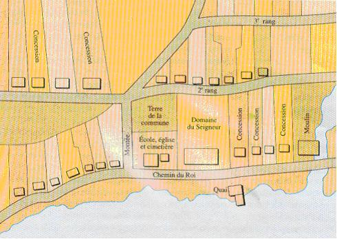
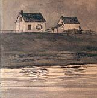

|
Nous avons vu migrer la troisième génération
Choret vers la
région de Montréal peu avant 1720, les suivantes vont continuer à vivre dans les environs. On peut vérifier dans les données généalogiques que
les gens s'installent par "apparenté". La plupart vivent, se
marient et décèdent tous dans les environs. |
|
|
|
Au 17ème siècle, la population s'établit surtout aux alentours des trois villes de la colonie, soit Montréal, Québec et Trois-Rivières. Pendant des années, les raids iroquois ralentissent l'expansion démographique, mais dès que la "Grande Paix" s'instaure, le développement reprend de plus belle. En 1709, Gédéon de Catalogne dresse des cartes géographiques où l'on remarque que les habitants se concentrent essentiellement dans la vallée du Saint-Laurent, de Rivière-Ouelle jusqu'à les Cèdres, dans la région de Montréal.  "Le pays que nous côtoyons est partout assez beau et c'est un plaisir de voir comme il est joliment habité, et de façon si dense, sur les deux bords du fleuve; on pourrait presque dire qu'il forme un village continu qui commence à Montréal et se prolonge jusqu'à Québec, soit sur une distance d'au moins trente milles suédois; c'est un assez long village! Presque partout en effet les fermes se touchent, distantes les unes des autres d'environ trois ou quatre arpents." Au cours du 18ème siècle, beaucoup de gens quittent les centres urbains pour la campagne, si bien que vers la fin du Régime français, 15% de la population habite à la ville contre 85% à la campagne. Avant de s'installer, on s'assure d'y avoir de la famille ou des amis, car l'entraide est essentielle à la survie. Aussi, il n'est pas rare de voir une agglomération de 10 à 50 habitations en un lieu donné ; on parle alors de côtes et non de villages. Cette proximité est due autant à des conditions géographiques qu'à des liens familiaux et permet entre autres de se serrer les coudes dans les moments difficiles.  Une ferme s'étend sur environ 90 arpents. Elle compte une maison, une grange, une étable, des terres à labourer dont plus du tiers est consacré à la culture des céréales. Une autre partie, en prairies et fourrages, sert à nourrir les animaux. Le reste de la terre est en "bois debout" d'où l'on tire le bois de chauffage et de charpente. Généralement, le paysan s'assure d'être autosuffisant et ne va à la ville que pour y acheter les instruments qu’il ne peut fabriquer : outils, clous, épingles, tissus, etc. La population de la vallée du Saint-Laurent se multiplie très rapidement. Elle passe de 23 000 personnes en 1720 à environ 55 000 en 1755 pour se retrouver à 70 000 environ en 1760. L'accroissement naturel est non négligeable puisque sur ces 70 000 habitants, on estime que seulement 9 000 à 10 000 sont des immigrants français, les autres étant nés au pays. Bibliographie:
|